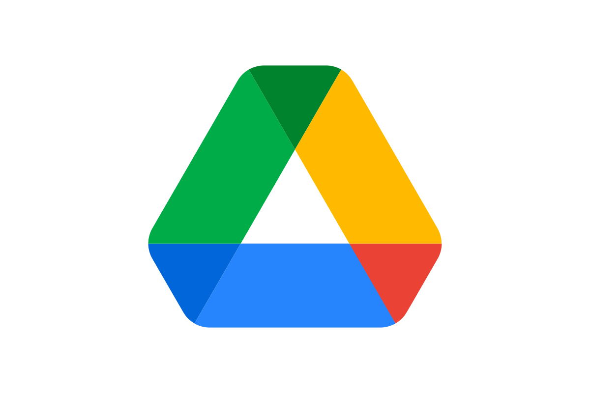
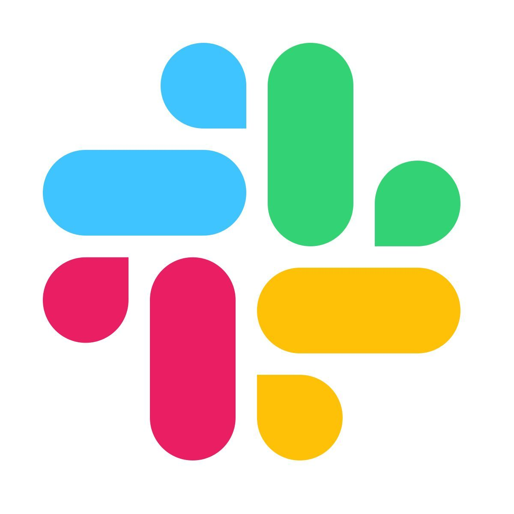
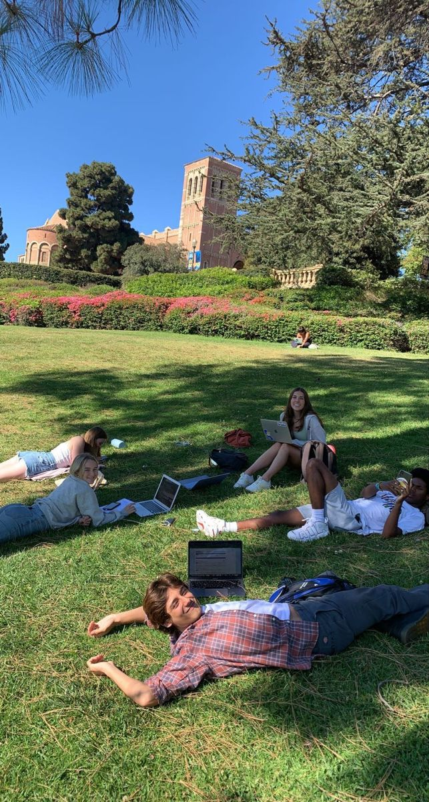
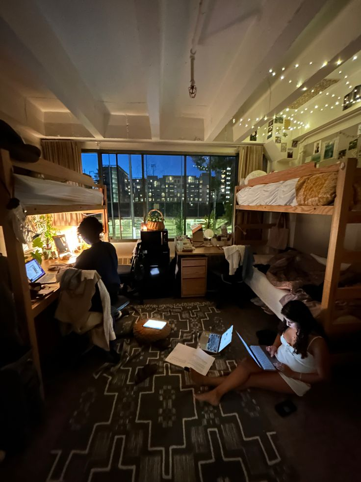
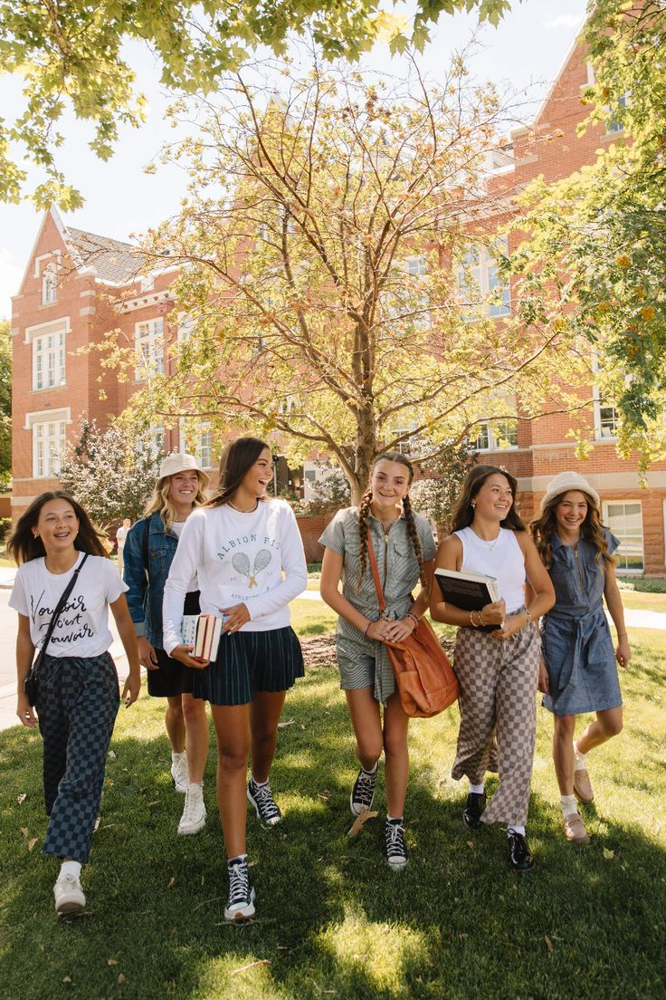
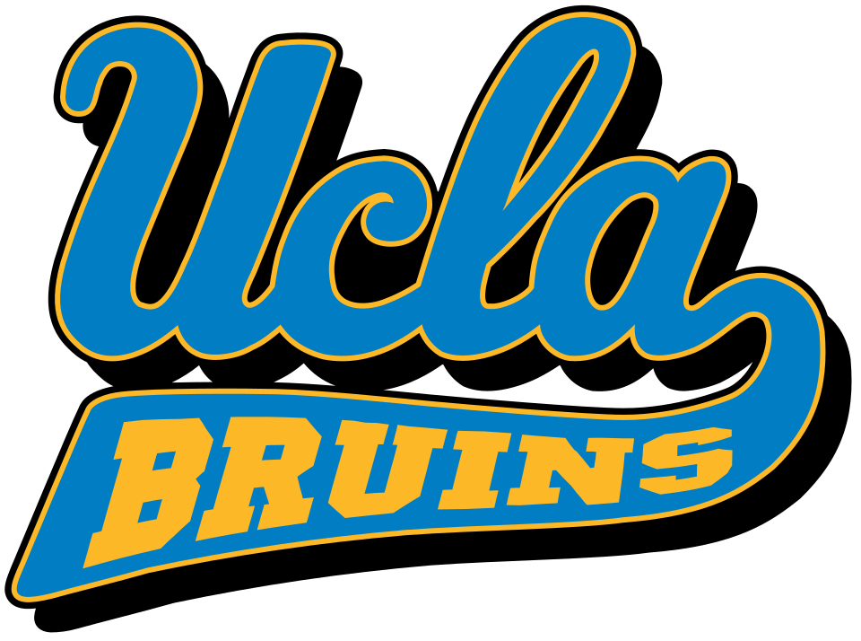
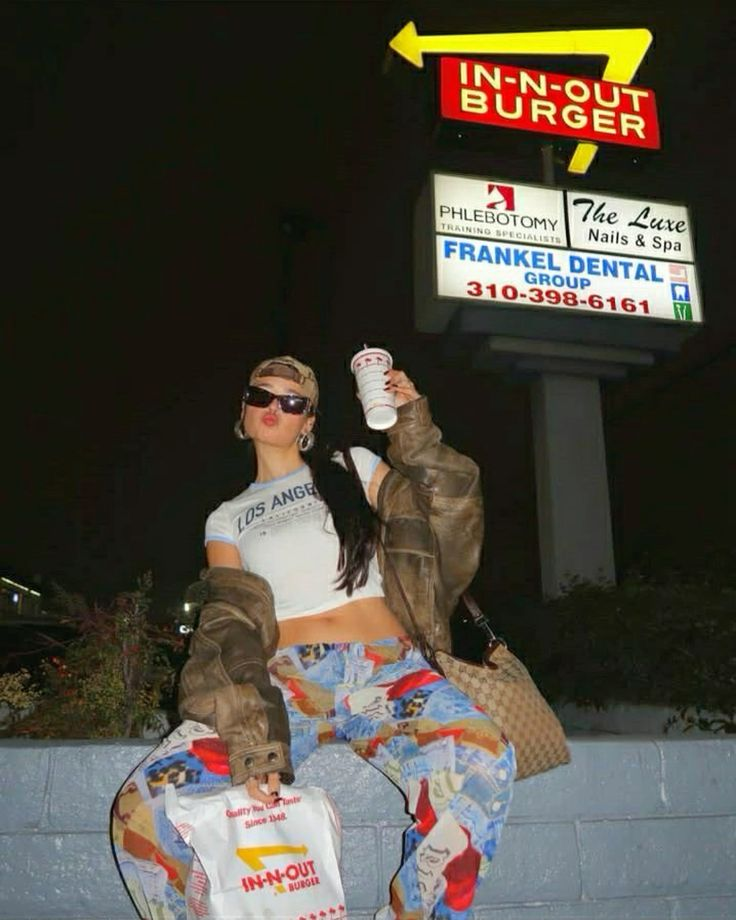

Accepted students, campus leads, school roles, and group-chat momentum.
Used by 100K+ students
New College creators for consumer brands
Launch your college creator program in 30 days.
Circuit turns student creators, QR missions, and campus field notes into a launch channel brands can actually scale.
The ambassador loop
Community becomes the engine. Circuit runs the system.
Circuit starts with a student community, gives it a mission rhythm, pushes the best moments into social, then routes proof and field learning back into one operating layer.
Briefs live where students already coordinate.


Students post UGC, QR pushes, story links, shelf checks, and campus drops.
Proof screenshots, live links, creator scores, objections, and next-school reads.

Campus, but curated
The program should look like something students already want to be part of.
Circuit is designed to feel native to campus culture: phone-first, photo-heavy, a little cinematic, and built around the moments students actually share.


What Circuit builds
Not rented creator posts. An owned college growth channel.
Brands already know campus matters. Circuit handles the hard part: turning messy student interest into a managed program with roles, missions, tracking, proof, and a repeatable operating loop.
Program Setup
Active
Brand pilot
Back-to-School Ambassador Program
Creator lane
Game day, dorm life, food runs, campus stories
Live
Institution
University of California-Los Angeles

Recruit
Score
Brief
Track
01
Applications + DMs become a ranked student bench.
02
Campus leads, creators, and field roles get assigned.
03
Missions launch through Discord, Notion, links, and proof folders.
Student Files
5 matched
Ambassadors
5
Maya Chen
UCLA • football games • 18.4K TikTok
Lead
Game day stories, campus fits, quick interviews.
Sofia Reyes
UCLA • lifestyle • 9.8K Instagram
UGC
Dorm routines, study spots, campus photo drops.
Ava Morgan
LA schools • music + food • 6.2K Reels
Field
Street-level proof, local culture, sample runs.
Ready bench
3 leads, 12 creators, 41 applicants to score

+9 next-wave creatorsCreator Ops
Live chat
#ucla-back-to-school
Ambassador command center
Food run proof
Story live • code tracked
Campus lifestyle post
Caption approved • awaiting link
Live operating layer
Every mission has a job, a student, a proof path, and a payout.
Circuit feels like a creator network, field team, research panel, and campus media layer in one workflow.
Brief
Approved hooks, banned claims, reward, deadline
Activate
UGC creators, nano posts, retail checks, school leads
Collect
Live links, proof screenshots, raw clips, field notes
Report
Top schools, creators, hooks, incentives, next mission
Mission menu
Run the campus actions brands usually struggle to coordinate.
Study routine clips
Students film raw vertical content around real use cases: library, dorm, gym, club, apartment, and finals week.
Retail checks
Students document shelf availability, pricing, placement, competitors, stockouts, and store-level friction.
Tracked pushes
Every nano gets a personal code, link, QR, sample path, or store locator so action is visible by school.
Student field notes
Turn comments, objections, phrases, screenshots, group-chat reactions, and campus context into a decision-grade read.
What brands own after
A living student bench, not a campaign recap.
A campaign ends. A college creator program compounds. Circuit leaves the brand with accepted ambassadors, school-level learning, reusable briefs, content assets, and a clear answer to what should happen next.
Vetted student bench and top-performer list
School pods with campus leads and roles
UGC library and proof submission archive
Codes, links, QR paths, and mission templates
Final recommendation on schools, hooks, creators, and incentives
Founding pilot
30-Day College Channel Buildout
Built for founder-led consumer brands that want a real college read before committing to a larger back-to-school activation.
First pilots
$7.5K-$12K
Setup, first-wave activation, UGC, field notes, tracked actions, and final report.
100-250
applicants or recruited candidates
50-100
accepted ambassadors and nanos
5-10
school pods or priority clusters
10-25
UGC clips or raw content assets